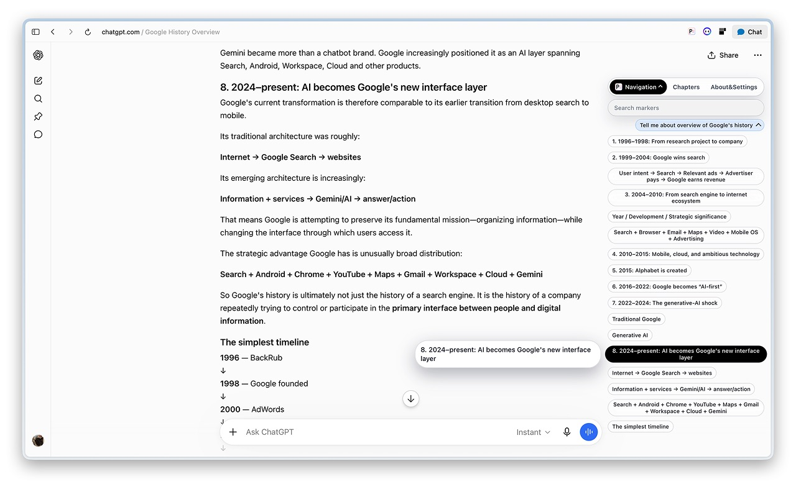
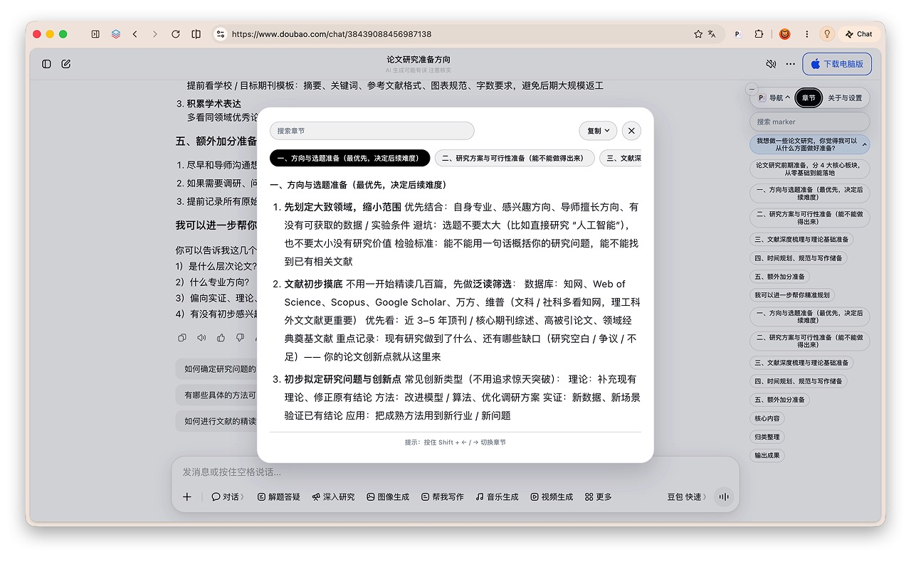

博客 · 为什么做 Polaris
找不到 ChatGPT 里的一个数字，我用一天做了个插件
今年 6 月有一阵子，我天天泡在 ChatGPT 里。
当时我在做一份行业调研，时间有点赶。我习惯先用 ChatGPT 帮我梳理思路：行业怎么走，市场有多大，用户是谁，竞品在做什么，一块一块地问。它也实在，每次回我几千字，一聊就是大半天。
麻烦的是市场数据。聊着聊着市场越分越细，数字也跟着改，前面一版，后面又一版。等我想回去核对某个数到底是哪一版，就只能一直往上滑。快捷键也试过，搜出来的东西不太对，跳来跳去的，用着很别扭。
那天我对着屏幕想，东西明明都在里面，怎么就是找不着呢。
老板还在等结果，我却在几千字里来回翻。于是我干脆打开了 Codex，想自己做个小工具。一天之后，一个能跑起来的浏览器插件出现在我的浏览器里。它后来有了名字，叫 Polaris。
上线一个月，Polaris 有了 140 多个安装，用户来自中国大陆、美国、台湾和越南，大部分是自己搜到的。数字不大，但对我来说意义不小，因为这是我第一个完全由自己决定、自己做出来的产品。
其实这个念头，我已经想了很多年。
一、过去：我是怎么走上设计这条路的
大学那会儿，我想去实习当新闻编辑，可人家要求会修图、会排版，我就硬着头皮学了 PS。说实话，我对它没什么兴趣，只是当个工具在用。
转折来自后来团队合作的研发老大。有一天他突然问我，要不要试试做 UI 设计，我想都没想就答应了。第一次画出一个手机屏幕的原型界面，我觉得这事太酷了。
我的专业跟设计一点关系都没有，可从那以后，我就一直在往这条路上走。
毕业那年，我一个人拖着行李去深圳面试。第一份设计工作是给电商画海报，今天做大促，明天做新品，一张接一张地出图。离我想做的界面还有点远，但总算是进了这一行。
后来我进了智能硬件行业，一直做到现在。猫砂盆、喂食器、扫地机、割草机都做过，印象最深的是扫地机。那段时间老板几乎一天一个新想法，产品那边跟不上，需求常常说不清楚。很多细节是我一边和领导聊，一边跟开发一起补，最后硬是把东西扛了出来。
东西上线了，可方向不是我定的，功劳好像也不太算在我身上。时间长了会有点失落，总觉得自己做了很多事，却没什么人看得见。
所以我心里一直有个念头：哪天能从头到尾做一个自己的产品就好了。想法来自我自己看到的场景，做也由我自己来做。
二、卡住的那段日子
想自己做产品，技术这关总得过。
好在做智能硬件这些年，我几乎天天和开发泡在一起。补需求的时候，我会顺手想一想这个功能好不好实现，要改哪些地方，会不会拖慢进度。有人觉得这不是设计师或者产品该操心的事，可我总觉得，想清楚怎么做出来，设计才算真的落了地。要是没有这些年跟开发的来回沟通，我大概还停在画图的阶段。
所以我很早就开始学写代码了，跟着 Simon NG 的 iOS 实践和 Jade 的 ChaoCode 频道一点点啃。身边也有做独立开发的朋友，他们一直在影响我。
可真动起手来，才发现难的地方跟我想的不一样。
一是时间。白天上班，之前项目紧张，能学的只有晚上和周末，常常刚找到一点感觉，一周又过去了。
二是看不懂。有一次我给自己的 App 做一个详情页面，心里想着的是优雅的系统转场，但那时候我连这个 API 叫 fullScreenCover 都不知道，只能凭感觉东拼西凑，翻来覆去做了很久，一直没有突破。
三是不好意思问。我知道答案可能就在朋友一句话里，可已经问过好几次了，再开口真有点抹不开面子。
那段时间很焦虑。一个功能反复修改，始终没有进展。白天上班时惦记着它，夜里躺下还在想方案哪里不对，常常辗转难眠，熬夜和失眠几乎成了常态。
后来我换了个办法。我在 NotebookLM 里攒了一堆 SwiftUI 的技术文档，带着这些资料去问 Codex，来回聊了几轮，发现系统本来就有现成的方案。没多久，我想要的缩放转场就做出来了。
问 Agent 最大的好处是，问多少遍都不用不好意思。从那以后，我的习惯变成了先问 Agent，再问人。第一次打开终端时我连 cd 都要现查，后来 npm、ffmpeg、部署环境这些，也都是一边问一边学会的。今年我又开始用 skill 和 Codex 的 plan mode，先让它陪我把方案想明白，再动手。
三、现在：白天做硬件，晚上做自己的产品
所以回到 6 月那次调研，我滑了半天没找到那个数字，干脆不找了，打开 Codex 做了 Polaris。
它做的事很简单：在 AI 的长回复里快速跳转，一眼找到你要的那一段。ChatGPT、Claude、豆包、千问都能用，连小红书里的 AI 也支持，后来还加了大纲。

我给它起名 Polaris，是北极星的意思。AI 吐出来的东西只会越来越多，人得有个东西帮忙指个方向。
做自己的产品，感觉跟上班很不一样。我会天天盯着数据看，涨了开心，掉了也心里一紧，因为每一个数字都是实打实的。好在发布还算顺利，虽然还不完美，但目前收到的评分都是五星。

以前总是在别人的需求里补细节，这一次，终于轮到我自己定方向了。
现在我白天仍在公司做智能硬件，业余时间做自己的产品。Polaris 是第一款，另一款 App 也在开发中。它会在手机本地自动整理相册，让那些拍完就被遗忘的照片，重新被看见。
如果要给自己一个称呼，我想是一个懂设计的独立开发者。
最后，谢谢我的爱人，谢谢我的独立开发朋友 bunny 和 shuhari，还有设计师朋友 kira，一路陪我聊产品、聊技术，帮了我很多。
如果你也被 AI 的长回复困扰过，可以试试 Polaris。近期还在改版中，敬请期待。
也欢迎你在 X 上关注我，看一个懂设计的独立开发者接下来会做出什么。